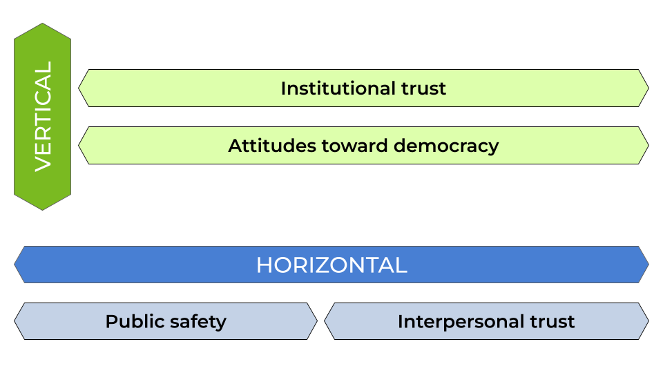
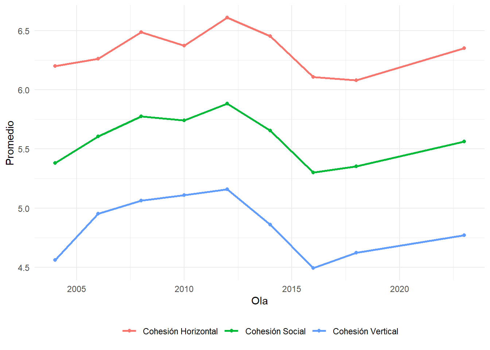
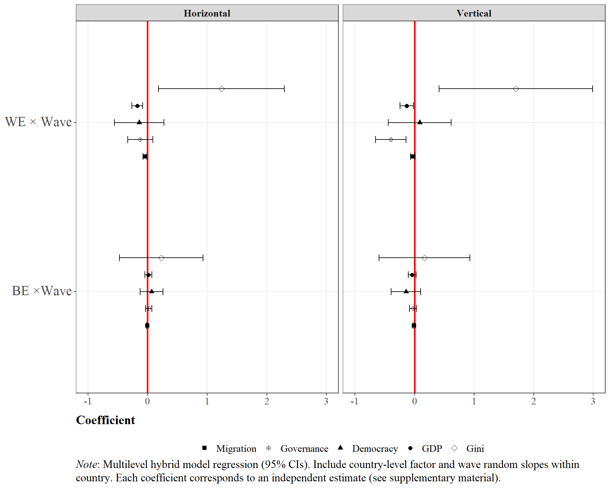

![]()
| Country | 2004 | 2006 | 2008 | 2010 | 2012 | 2014 | 2016 | 2018 | 2023 | Total |
|---|---|---|---|---|---|---|---|---|---|---|
| Argentina | 0 | 0 | 1231 | 1235 | 689 | 1249 | 2816 | 2884 | 1469 | 11573 |
| Belize | 0 | 0 | 1096 | 1341 | 715 | 1380 | 0 | 0 | 1411 | 5943 |
| Bolivia | 2802 | 2563 | 2590 | 2603 | 2605 | 2848 | 2900 | 3060 | 0 | 21971 |
| Brazil | 0 | 0 | 1203 | 2112 | 681 | 1390 | 2906 | 2782 | 1407 | 12481 |
| Chile | 0 | 1412 | 1358 | 1723 | 699 | 1268 | 2900 | 2978 | 1525 | 13863 |
| Colombia | 1304 | 1268 | 1318 | 1272 | 624 | 1353 | 2886 | 1530 | 1400 | 12955 |
| Costa Rica | 1386 | 1422 | 1350 | 1373 | 674 | 1425 | 2758 | 2806 | 1447 | 14641 |
| Dominican Republic | 0 | 1312 | 1265 | 1292 | 656 | 1400 | 1288 | 1360 | 2974 | 11547 |
| Ecuador | 2644 | 2657 | 2768 | 2589 | 628 | 1315 | 1388 | 2934 | 1414 | 18337 |
| El Salvador | 1407 | 1573 | 1468 | 1500 | 620 | 1448 | 1450 | 1353 | 1457 | 12276 |
| Guatemala | 1237 | 1133 | 1157 | 1217 | 643 | 1309 | 1355 | 1362 | 1425 | 10838 |
| Guyana | 0 | 1151 | 2069 | 1267 | 654 | 1315 | 0 | 0 | 0 | 6456 |
| Haiti | 0 | 1363 | 1351 | 1596 | 845 | 1318 | 1681 | 0 | 0 | 8154 |
| Honduras | 1220 | 1366 | 1275 | 1437 | 717 | 1452 | 1349 | 1328 | 1385 | 11529 |
| Jamaica | 0 | 1219 | 1272 | 1297 | 706 | 1202 | 1180 | 1151 | 1209 | 9236 |
| Mexico | 1366 | 1351 | 1402 | 1385 | 697 | 1320 | 1374 | 1387 | 1545 | 11827 |
| Nicaragua | 1098 | 1491 | 1278 | 1373 | 1573 | 1402 | 1383 | 1376 | 0 | 10974 |
| Panama | 1528 | 1374 | 1405 | 1435 | 706 | 1414 | 2868 | 2924 | 1454 | 15108 |
| Paraguay | 0 | 0 | 1065 | 1300 | 676 | 1240 | 1170 | 1346 | 1310 | 8107 |
| Peru | 0 | 1340 | 1385 | 1382 | 670 | 1337 | 2478 | 1449 | 1481 | 11522 |
| Trinidad & Tobago | 0 | 0 | 0 | 0 | 0 | 0 | 0 | 0 | 1444 | 1444 |
| Uruguay | 0 | 1068 | 1359 | 1321 | 671 | 1342 | 2720 | 2866 | 1383 | 12730 |
| Venezuela | 0 | 1386 | 1330 | 1340 | 686 | 1377 | 2794 | 0 | 0 | 8913 |
| Total | 15992 | 26449 | 31995 | 33390 | 17835 | 31104 | 41644 | 36876 | 27140 | 262425 |
Two decades of changes in social cohesion in Latin America (2004-2023)
Resumen
In a regional context marked by political crises, persistent inequalities, and episodes of social unrest, understanding the evolution of social cohesion is essential for assessing democratic stability and institutional legitimacy. Although there are numerous studies on the causes and consequences of mistrust or polarization in Latin America, there is still a gap in the systematic and longitudinal analysis of social cohesion as an integral phenomenon. This paper seeks to fill that gap by developing a set of indicators that allow for the analysis of the evolution of the different dimensions of social cohesion with temporal and regional comparability.
This article seeks to fill these gaps by proposing and validating a measurement model that allows for a comparative, longitudinal, and multilevel analysis of social cohesion in Latin America. Specifically, we seek to advance: (i) a clear and validated operationalization that integrates key dimensions from the existing literature and available data for the region; (ii) the estimation of regional and national trajectories over the last two decades; and (iii) the identification of factors associated with these changes through the application of hybrid multilevel regression models. This is expected to provide robust evidence on changes in the region over the last two decades, contributing to the academic and political discussion on the challenges and opportunities of social cohesion in Latin America.
Palabras clave
social cohesion, multilevel analysis, longitudinal analysis
Introduction
Social cohesion has emerged as a critical dimension of societal well-being and democratic stability, particularly in regions experiencing rapid social and political transformation. In Latin America, recent years have been marked by episodes of political instability, persistent inequalities and low economic growth, as well as cycles of social conflict (Salazar-Xirinachs, 2023; United Nations Development Programme, 2023). Social tensions therefore appear to have increased in the region, reflecting a lack of trust in democratic institutions and widespread discontent with corruption and inequality. In this context, social cohesion has climbed the public and academic agendas, with recent diagnoses from both international organizations and national governments warning about its strains and the challenges it poses for democratic governance and inclusive development (Castillo et al., 2022; Ministerio de Desarrollo Social y Familia, 2020; Salazar-Xirinachs, 2023; United Nations Development Programme, 2023).
Despite its widespread and everyday use in public discussion, defining social cohesion theoretically and operationally remains a challenge. The literature ranges from studies focused on one or several specific dimensions of social cohesion (Ariely, 2013; Castillo et al., 2022; Castillo et al., 2023) to efforts to synthesize the phenomenon into comprehensive indices (Delhey et al., 2018; Delhey & Dragolov, 2016; Dragolov et al., 2013; Janmaat, 2010; Langer et al., 2016). Such conceptual and methodological heterogeneity makes it difficult to compare countries and to detect transformations over time. Moreover, most of these definitions and their correspondent operationalizations have been tested mainly in European or high-income countries (Ariely, 2013; Delhey & Dragolov, 2016), with only partial references to Latin America (Janmaat, 2010). This limitation persists even though evidence suggests that national and regional differences in cultural, historical, and institutional contexts shape the cohesion of societies and the factors that determine it (Delhey & Dragolov, 2016; Janmaat, 2010). Thus, despite the widespread perception that social cohesion is under strain in Latin American societies,there is a lack of empirical evidence of differences between countries, trends over time, and the factors that explain these changes.
This article has a double aim. On the one hand, and based on previous comprehensive approaches to social cohesion, it seeks to propose and validate a measurement model that enables comparative, longitudinal, and multilevel analysis of social cohesion in Latin America. On the second hand, based on this model, we aim to advance on the estimation of regional and national trajectories over the past two decades, as well as to identufy factors associated with these changes through longitudinal multilevel regression models. This is expected to provide robust evidence on the changes in the region over the last two decades, contributing to the academic and policy discussion on the challenges and opportunities of social cohesion in Latin America.
Methodology
Data
The main source of data for this study is the AmericasBarometer of the Latin American Public Opinion Project, also known as the LAPOP Survey. The survey aims to collect data on public opinion about democracy and governance in the Americas. The survey design is probabilistic and representative of the adult population in each country (LAPOP LAb, 2023).
The survey has been conducted regularly since 2004. To date, nine waves have been carried out, covering between 11 and 23 countries, with a total of over 400,000 interviews in two decades. The questionnaire is administered through face-to-face surveys, with the exception of Canada and the United States.
As a criterion, this study included only those countries in the region that had data available for the main indicators of the study at least five points in time. As summarized in Tabla 1, this study includes a total of 238,257 individuals nested in 174 country waves in 25 countries in the Americas.
For contextual data on countries, various data sources were used, including:
Open data from the World Bank. This contains various indicators on social and economic development for most countries in the world. The data portal is accessible at: https://datos.bancomundial.org/.
The World Bank’s Worldwide Governance Indicators. This is a survey of experts that collects data on various governance indicators, covering multiple countries with information updated between 1996 and 2003. The data is available at: https://www.worldbank.org/en/publication/worldwide-governance-indicators.
The V-Dem Dataset. It collects a multidimensional set of data that seeks to measure the quality of democracy around the world. The database is accessible through the R package
vdemdata(Maerz et al., 2025).
Variables
Dependent variables
A Social Cohesion Index was constructed, comprising two dimensions which, in turn, are summary indices constructed from LAPOP indicators. The selection of indicators, sub-dimensions, and dimensions is based on previous work at the aggregate level by the Social Cohesion Observatory, accessible here: https://ocscoes.github.io/medicion-cohesion-LA/.
The Horizontal Cohesion Index consists of two sub-dimensions: Urban Safety and Interpersonal Trust. Urban Safety includes indicators of objective safety and subjective safety. Interpersonal Trust, meanwhile, is a single indicator of how trustworthy people are in general[¹].
The Vertical Cohesion Index consists of two dimensions: Trust in Institutions and Attitudes toward Democracy. Trust in Institutions includes indicators related to citizens’ trust in Congress, the judiciary, and political parties. Attitudes toward Democracy consists of two indicators on support for the democratic system and satisfaction with the functioning of democracy in one’s country[²].
The indicators were standardized so that all sub-dimensions and dimensions of the indices have a range from 0 to 10, with 0 indicating low levels of social cohesion and 10 indicating high levels of cohesion.
Independent variables
Economic, institutional, and cultural factors were included as independent variables. Recognizing the hierarchical structure of the data, predictors were considered at the individual level, at the wave-country level, and at the country level.
Individual variables
The main individual predictor used in this study is the educational level of individuals. The multiple LAPOP codes for this indicator were unified to create a variable with three categories, distinguishing between individuals with primary, secondary, and tertiary education.
In addition, gender, age, and political position were added as control variables.
Contextual variables
Economic prosperity was measured using the logarithm of GDP per capita at purchasing power parity (PPP) values. Economic inequality was measured using the Gini index. Both indicators were extracted from the World Bank database. In addition, the percentage of individuals with tertiary education in a country was included as a proxy for educational opportunities.
In terms of institutional factors, the Electoral Democracy Index, or polyarchy, was used to measure the democratic quality of countries. On the other hand, a governance index (\(\alpha\) = 0.96) calculated from the World Bank’s Worldwide Governance Indicators was included (Kaufmann & Kraay, 2024).
Cultural diversity will be measured as the percentage of the migrant population relative to the total population of the country, using data from the World Bank. Given that the series is available every five years, an annual series was constructed by imputing the intermediate years using logistic interpolation.
Method
Confirmatory factor analysis
A confirmatory factor analysis was performed to test the model constructed by the Social Cohesion Observatory (2025) and the theoretical proposal by Chan et al. (2006). As can be seen in Figura 1, social cohesion is understood as a latent construct consisting of two latent dimensions: vertical cohesion and horizontal cohesion.

Multilevel analysis
Given the hierarchical structure of the data, hybrid multilevel regression models were estimated. This technique allows individual-level data to be used to decompose country-level effects into their components between countries (between effects) and within a country over time (within effects) (Fairbrother, 2014; Schmidt-Catran & Fairbrother, 2016). The models were estimated using the R package lme4 (Bates et al., 2015).
The proposed model could be formally expressed as:
\[ y_{jti} = \beta_{0}(t) + \beta_{1}X_{jti} + \gamma_{we}(Z_{jt}-\bar{Z}_{j}) + \gamma_{be}\bar{Z}_{j} + v_j + u_{jt} + e_{jti} \] The model integrates three levels with individuals \(i\) nested in waves-countries \(t\) nested in countries \(j\). \(X_{jti}\) represents individual-level variables, while \(Z_{jt}\) are contextual variables at the wave-country level. Given that \(Z_{jt}\) contains variance at both level 2 and level 3, it was broken down into the average of the variable across all its waves (\(\bar{Z}_{j}\)) and the intra-country deviation in a given wave (\(Z_{jt}-\bar{Z}_{j}\)). Thus, \(\gamma_{we}\) represents the within effect, that is, the effect of change in a country over time, while \(\gamma_{be}\) represents the between effect, that is, the structural differences between countries. In addition, \(\beta_{0}(t)\) controls for changes over time not explained by the model. Finally, \(v_j\), \(u_{jt}\) and \(e_{jti}\) represent the errors at the country, wave-country, and individual levels.
Results
Confirmatory Factor Analysis

Figura 2 reports the confirmatory factor analysis for the proposed two-factor measurement model. At first, overall fit appears strong (RMSEA = 0.03; CFI=0.0996). However, these indices should be interpreted with caution, given that including only two indicators per factor results in the model being just overidentified (df=1), which limits the diagnostic value of global fit measures.
Standardized factor loading are moderate. For Horizontal Cohesion, loadings range from 0.44 to 0.49, and for Vertical Cohesion from 0.56 to 0.58. The latent correlation between both factors is also moderate (r = 0.51), implying related but empirically distinguishable dimensions. Following Dickes and Valentova (2013), this pattern supports interpretation of social cohesion as a multidimensional construct. However, the statement that a single composite indicator is “not possible” (2013, p. 836) might be discussed. Empirically, the moderate latent correlation observed here suggest a shared component that could justify, on pragmatic grounds, a composite summary for descriptive purposes. Nevertheless, such composite cannot be treated as evidence of unidimensionality nor a higher-order general factor. Accordingly, subsequent analyses will primarily treat Vertical and Horizontal dimensions as separate construct, with any exceptions explicitly noted.
Descriptives

Figura 3 shows the averages for each year for the different types of cohesion. First, we observed that horizontal cohesion maintained an upward trend between until 2012, reaching 6.54 (out of 10) that year. After that, horizontal cohesion faced a sustained decline until 2018, with a regional mean of 5.93, before rebounding to somewhat similar levels as 2004 (6.17).
Meanwhile, vertical cohesion show a similar trends, with a persistente trends overt time until 2010, when it suffered a sharp decline. Between 2010 and 2016, the regional mean went from 5.24 to 4.44. After that, the index showed a slight increase, reaching 4.63 in 2023.
Across the entire period under study, horizontal cohesion remains consistently higher than vertical cohesion, with an average gap of 1.38 points. This persistent difference may reflect the structural and enduring institutional weaknesses present in many Latin American states, which might tend to reinforce the role of interpersonal relationships, family ties, and informal networks as key resources for facing social life (Araujo & Martuccelli, 2014; Brinks et al., 2020).
At first glance, these trends appear closely aligned with the broader political, economic, and social context of Latin America over the period analyzed. The upward trajectories observed until 2010–2012 coincide with the commodities boom, during which rising prices of commodities such as oil, copper, and agricultural products—driven largely by demand from emerging economies—supported sustained economic growth in the region. This favorable context was leveraged by progressive and populist governments to implement redistributive policies, contributing to notable reductions in poverty and income inequality across several countries (Sánchez-Ancochea, 2021).
Following the slowdown of the Chinese economy around 2012 and the subsequent end of the commodities boom, many Latin American countries entered a period of economic, political and social struggles, which might be reflected in the decline of both dimensions of cohesion. Meanwhile, the slight rebound observed in 2023 may be interpreted as a process of social and political recomposition in the aftermath of the COVID-19 pandemic, during which the expansion of state support and the reinforcement of solidarity mechanisms may have partially mitigated previous erosions of social cohesion.
Interactions

Figure ?@fig-coefplot shows the coefficients for the between- and within-country effects for the country-level characteristics and the time trend (wave). When examining the between-country effects (BE × wave), the results indicate no significant differences for any of the socioeconomic, political, or migration variables.
In contrast, the within-country effects (WE × wave) reveal nuances in their relationship with social cohesion. For economic inequality, an increase in within-country inequality is associated with a decline in social cohesion in both the horizontal and vertical dimensions as time progresses.
Additionally, the effect of economic prosperity within countries becomes increasingly positive for horizontal cohesion over time. However, this pattern is not observed for vertical cohesion.
Regarding political variables, changes in levels of democracy do not show differences over time for either dimension of social cohesion. In contrast, the results for governance indicate that, as time passes, increases in governance become more positively associated with social cohesion.
Finally, for migration, the results show no significant changes in the within-country effect or its interaction with time for either dimension of social cohesion.
Table 6…
Referencias
ANDREWS, R., & JILKE, S. (2015). Welfare States and Social Cohesion in Europe: Does Social Service Quality Matter? Journal of Social Policy, 45(1), 119-140. https://doi.org/10.1017/s0047279415000513
Araujo, K., & Martuccelli, D. (2014). Beyond Institutional Individualism: Agentic Individualism and the Individuation Process in Chilean Society. Current Sociology, 62(1), 24-40. https://doi.org/10.1177/0011392113512496
Araujo, K., Orchard, M., Rasse, A., & Stecher, A. (2022). Primer Informe de Resultados Encuesta Nacional de Autoridad NUMAAP 2021. NUMAAP.
Ariely, G. (2013). Does Diversity Erode Social Cohesion? Conceptual and Methodological Issues. Political Studies, 62(3), 573-595. https://doi.org/10.1111/1467-9248.12068
Bates, D., Mächler, M., Bolker, B., & Walker, S. (2015). Fitting Linear Mixed-Effects Models Using Lme4. Journal of Statistical Software, 67(1). https://doi.org/10.18637/jss.v067.i01
Brinks, D. M., Levitsky, S., & Murillo, M. V. (Eds.). (2020). The Politics of Institutional Weakness in Latin America (1.ª ed.). Cambridge University Press. https://doi.org/10.1017/9781108776608
Cabib, I., Miranda, D., Ormeño, J. P., & Moyano, D. (2025). Nuestras Trayectorias. Dinámicas intra-individuales e inter-individuales en Chile (2016-2023). https://doi.org/10.13140/RG.2.2.23888.62720
Castillo, J. C., Espinoza, V., & Barozet, E. (2022). Cohesión social en Chile en tiempos de cambio: indicadores, perfiles y factores asociados.
Castillo, J.-C., Olivos, F., & Iturra, J. (2021). Conceptos y Medición de Cohesión Social En Proyectos Internacionales (Documentos de {{Trabajo COES}} 47; pp. 1-37). COES.
Chan, J., To, H.-P., & Chan, E. (2006). Reconsidering Social Cohesion: Developing a Definition and Analytical Framework for Empirical Research. Social Indicators Research. https://doi.org/10.1007/s11205-005-2118-1
Delhey, J., & Dragolov, G. (2016). Happier Together. Social Cohesion and Subjective Well-Being in Europe: HAPPIER TOGETHER-COHESION AND SWB. International Journal of Psychology, 51(3), 163-176. https://doi.org/10.1002/ijop.12149
Dickes, P., & Valentova, M. (2013). Construction, Validation and Application of the Measurement of Social Cohesion in 47 European Countries and Regions. Social Indicators Research, 113(3), 827-846. https://doi.org/10.1007/s11205-012-0116-7
Fairbrother, M. (2014). Two Multilevel Modeling Techniques for Analyzing Comparative Longitudinal Survey Datasets. Political Science Research and Methods, 2(1), 119-140. https://doi.org/10.1017/psrm.2013.24
Gijsberts, M., van der Meer, T., & Dagevos, J. (2011). «Hunkering Down» in Multi-Ethnic Neighbourhoods? The Effects of Ethnic Diversity on Dimensions of Social Cohesion. European Sociological Review, 28(4), 527-537. https://doi.org/10.1093/esr/jcr022
Kaufmann, D., & Kraay, A. (2024). The Worldwide Governance Indicators (Policy {{Research Working Paper}} WPS10952). World Bank.
Kustov, A., & Pardelli, G. (2024). Beyond Diversity: The Role of State Capacity in Fostering Social Cohesion in Brazil. World Development, 180, 106625. https://doi.org/10.1016/j.worlddev.2024.106625
Langer, A., Stewart, F., Smedts, K., & Demarest, L. (2016). Conceptualising and Measuring Social Cohesion in Africa: Towards a Perceptions-Based Index. Social Indicators Research, 131(1), 321-343. https://doi.org/10.1007/s11205-016-1250-4
LAPOP LAb. (2023). AmericasBarometer.
Lê, F., Tracy, M., Norris, F. H., & Galea, S. (2013). Displacement, County Social Cohesion, and Depression after a Large-Scale Traumatic Event. Social Psychiatry and Psychiatric Epidemiology. https://doi.org/10.1007/s00127-013-0698-7
Maerz, S. F., Esgell, A. B., Hellemeier, S., Illchenko, N., & Fox, L. (2025). Vdemdata: An R Package to Load, Explore and Work with the Most Recent V-Dem (Varieties of Democracy) Dataset.
Meer, T. van der, & Tolsma, J. (2014). Ethnic Diversity and Its Effects on Social Cohesion. Annual Review of Sociology, 40(1), 459-478. https://doi.org/10.1146/annurev-soc-071913-043309
Ministerio de Desarrollo Social y Familia. (2020). Informe Final Consejo Asesor Para La Cohesión Social. Diagnóstico Para Una Aproximación a La Cohesión Social En Chile y Recomendaciones Para Fortalecer El Aporte de La Política Social.
Nazmi, A., Roux, A. D., Ranjit, N., Seeman, T. E., & Jenny, N. S. (2010). Cross-Sectional and Longitudinal Associations of Neighborhood Characteristics with Inflammatory Markers: Findings from the Multi-Ethnic Study of Atherosclerosis. Health & Place. https://doi.org/10.1016/j.healthplace.2010.07.001
Njozela, L., Shaw, I., & Burns, J. (2016). Towards Measuring Social Cohesion in South Africa.
O’Donnell, J., Guan, Q., & Prentice, T. (2024). Mapping Social Cohesion 2024 (Scanlon Foundation Research Institute).
Reeskens, T., & Wright, M. (2012). Nationalism and the Cohesive Society. Comparative Political Studies, 46(2), 153-181. https://doi.org/10.1177/0010414012453033
Salazar-Xirinachs, J. M. (2023). Repensar, reimaginar, transformar: los «qué» y los «cómo» para avanzar hacia un modelo de desarrollo más productivo, inclusivo y sostenible. Revista de la CEPAL, 2023(141), 11-43. https://doi.org/10.18356/16820908-2023-141-2
Sánchez-Ancochea, D. (2021). The Surprising Reduction of Inequality during a Commodity Boom: What Do We Learn from Latin America? Journal of Economic Policy Reform, 24(2), 95-118. https://doi.org/10.1080/17487870.2019.1628757
Schiefer, D., & van der Noll, J. (2017). The Essentials of Social Cohesion: A Literature Review. Social Indicators Research, 132(2), 579-603. https://doi.org/10.1007/s11205-016-1314-5
Schmidt-Catran, A. W., & Fairbrother, M. (2016). The Random Effects in Multilevel Models: Getting Them Wrong and Getting Them Right. European Sociological Review, 32(1), 23-38. https://doi.org/10.1093/esr/jcv090
Somma, N. M., & Valenzuela, E. (2015). Las Paradojas de La Cohesión Social En América Latina. Revista del CLAD Reforma y Democracia, 61, 43-74.
Stafford, M., Bartley, M., Sacker, A., Marmot, M., Wilkinson, R., Boreham, R., & Thomas, R. S. (2003). Measuring the Social Environment: Social Cohesion and Material Deprivation in English and Scottish Neighbourhoods. Environment and Planning a Economy and Space. https://doi.org/10.1068/a35257
Stefoni, C. (2018). Panorama de la migración internacional en América del Sur.
Toppi, H. P. (2018). Guillermo O’Donnell y Su Aporte al Desarrollo de La Democracia En América Latina Desde La Tercera Ola de Democratización. REVISTA IUS, 12(42). https://doi.org/10.35487/rius.v12i42.2018.407
Turchi, G. P., Bassi, D., Cavarzan, M., Camellini, T., Moro, C., & Orrù, L. (2023). Intervening on Global Emergencies: The Value of Human Interactions for People’s Health. Behavioral Sciences. https://doi.org/10.3390/bs13090735
United Nations Development Programme. (2023). Trapped: High Inequality and Low Growth in Latin America and the Caribbean: Regional Human Development Report 2021. United Nations. https://doi.org/10.18356/9789210057844